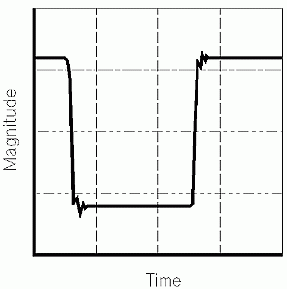
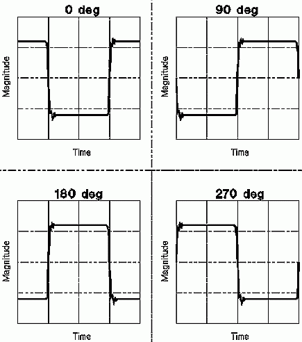
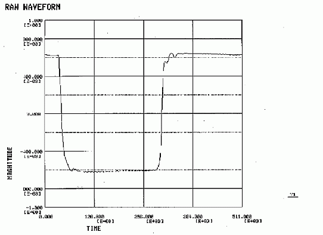
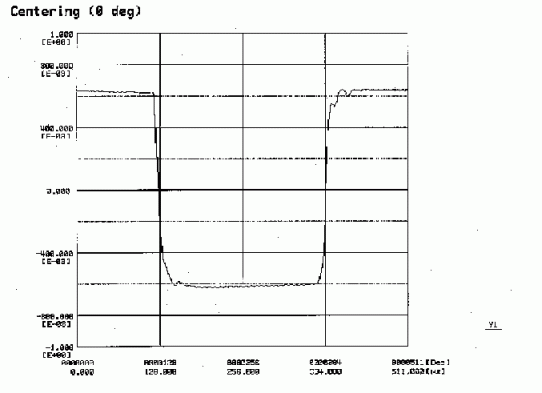
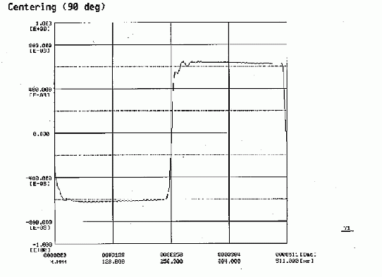
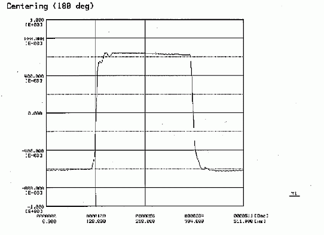
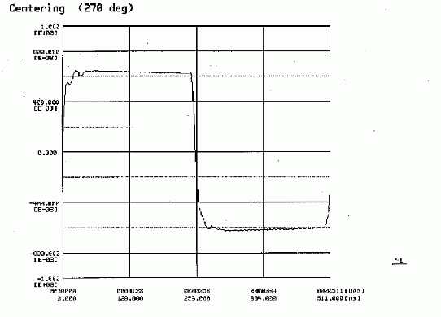

Centering a Pulse Waveform
Hideo Okawara, Verigy
Paper ID: 106140
Introduction
In a settling time measurement, rise/fall time calculation, and tests known as template fitting test, samplers are used to record waveforms.
The test signal waveform in such applications is usually a clock signal with 50% duty ratio. A single pulse waveform is captured in a unit test period as shown in the following example.

You may want to shift this waveform in the unit test period window to a position so you can analyze and parameterize it.
As used in this technical note, the meaning of "centering" is that you can shift your waveform to any desired phase.

Methodology of Phase Shifting
This shifting method uses Fourier's Fast Transform (FFT). The phase information of the fundamental component corresponds to the position of the pulse.
The procedure is quite simple, as follows:
- Apply FFT to the raw data
- Calculate the phase of the fundamental component
- Calculate the phase distance between the desired position and the current location
- Translate the phase distance into the data array step size (N)
- Shift the array data N points
Example Program
The model code is listed below. The variable "dTargetPhase" is the desired phase to which you want to move your waveform.
void Shift_Pulse(ARRAY_D& dVsmp, ARRAY_D& dWave, double dTargetPhase) {
/****************************************************************
* ARRAY_D & dVsmp : Input Parameter : Measured pule data
* ARRAY_D & dWave : Output Parameter : Shifted pulse data
* double : Input Parameter : Target phase in RADIAN
****************************************************************/
int i, j, N;
double dAx, dPx;
double dQx, dX;
ARRAY_COMPLEX CSp;
int Nsmp;
void RectPolar(COMPLEX *, double *, double *);
Nsmp = dVsmp.size();
CSp.resize(Nsmp/2);
DSP_FFT(dVsmp, CSp, RECT);
RectPolar(&CSp[1], &dAx, &dPx);
dQx = dTargetPhase - dPx;
dX = 2.0 * M_PI / Nsmp;
/* How many steps to be shifted */
if (dQx >= 0.0) N = (int)(dQx/dX + 0.5);
else N = (int)(dQx/dX - 0.5) + Nsmp;
/* Shift data N points */
i = N;
j = 0;
while (i < Nsmp) {
dWave[j] = dVsmp[i];
i++, j++;
}
i = 0;
while (i < N) {
dWave[j] = dVsmp[i];
i++, j++;
}
}
void RectPolar(COMPLEX * CAx, double * dLength, double * dArgument) {
double dR, dArg;
dR = sqrt(CAx->real() * CAx->real() + CAx->imag() * CAx->imag());
if (dR == 0.0) {
dArg = 0.0;
}
else {
if (CAx->real() == 0.0) {
if (CAx->imag() >= 0.0) dArg = 0.5 * M_PI;
else dArg = -0.5 * M_PI;
}
else {
dArg = atan2(CAx->imag(), CAx->real());
}
}
*dLength = dR;
*dArgument = dArg;
}Example Waveforms of Phase Shifting




